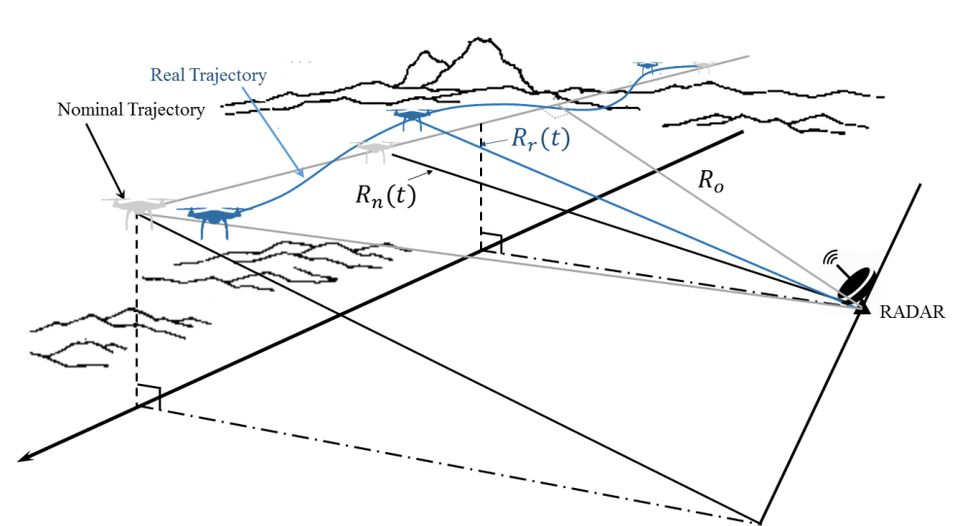

연구실적 · 국내전문학술지
ISAR 영상 기반 소형 드론 탐지 구현
Implementation of Radar Drone Detection Based on ISAR Technique

초록
최근 드론은 다양한 분야에서 활용되고 있지만, 테러, 범죄, 보안 등에 악용될 우려가 높아지고 있다. 해외에서는 안티드론 기술들에 대한 연구결과들이 수차례 발표되었으며, 국내에서도 레이다를 활용한 드론 탐지 기술에 관심이 증가하고 있다. 하지만 상용 드론은 작은 크기와 낮은 반사도로 인해 탐지가 어렵다고 알려져 있어 이를 극복하기 위한 기술개발이 필요되고 있다. 본 논문은 실제로 진행된 ISAR 기반의 드론 탐지 실험결과를 제시한다. 지상에 설치된 레이다를 통해 원거리에서 비행하는 드론의 ISAR 원시데이터를 획득하였으며, 영상형성 기법을 적용하여 탐지 성능이 향상됨을 보인다.
인용
이기웅, 김범승, 문민정, 송정환, 정철호, 이우경, 송용규, “ISAR 영상 기반 소형 드론 탐지 구현”, 한국전자파학회논문지, 제28권 2호, 2017년 2월
BibTeX
@article{Lee_2017,
title={Implementation of Radar Drone Detection Based on ISAR Technique},
volume={28},
ISSN={2288-226X},
url={http://dx.doi.org/10.5515/KJKIEES.2017.28.2.159},
DOI={10.5515/kjkiees.2017.28.2.159},
number={2},
journal={The Journal of Korean Institute of Electromagnetic Engineering and Science},
publisher={Korean Institute of Electromagnetic Engineering and Science},
author={Lee, Kee-Woong and Song, Kyoung-Min and Song, Jung-Hwan and Jung, Chul-Ho and Lee, Woo-kyung and Lee, Myeong-Jin and Song, Yong-Kyu},
year={2017},
month=Feb,
pages={159–162}
}